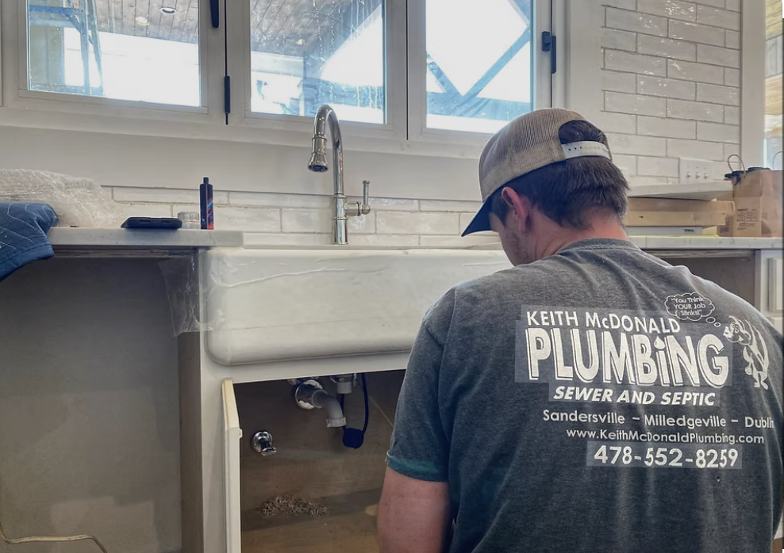

Sandersville - 555-555-5555
Milledgeville - 555-555-5555
Dublin - 555-555-5555
A Few Things We Do At Our Establishment

- Installation & Service of Septic Tanks & Sewer Systems
- Water Heater Installation & Repair
- Plumbing for New Construction and Remodels
- Pipe & Leak Repair
- Sewer Jetting & Video Camera Line Inspection
- Video Camera Line Inspection
- Portable Toilet Rental
Installation and Service
Leaky Pipes? Clogged Up Toilets? Full Septic Tanks?
If so, call the best plumbing company in the game Keith McDonald Plumbing, Sewer & Septic @ 1-800-266-0584.
Located
We operate primarily in Washington, Baldwin, and Laurens Counties and surrounding middle Georgia.
A Little Bit More About Us
- Plumbing is our specialty and we have a staff of qualified technicians that can quickly respond to your needs.
- We handle jobs of any size.
- We have an impressive resume that includes many large projects in the areas of residential, commercial, educational, and medical.
- Still not enough? If so, visit our projects page @ KMP PROJECTS for a sample of some of these jobs.
At Keith McDonald Plumbing, Sewer & Septic, we are dedicated to our promise of "Quality, Dependable Service." Our staff works very hard to see that each customer, large or small, is satisfied with a job well done. We are proud of the reputation that we have achieved and strive daily to maintain that reputation. We want to be the first name you think of when you have a plumbing need.
General Plumbing Service Professionals - LICENSED & INSURED
Proud Member of:
- Washington County Chamber of Commerce
- Wilkinson County Georgia Chamber of Commerce
- Baldwin County Chamber of Commerce